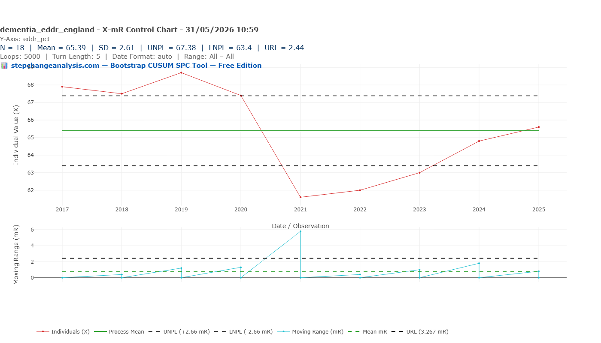
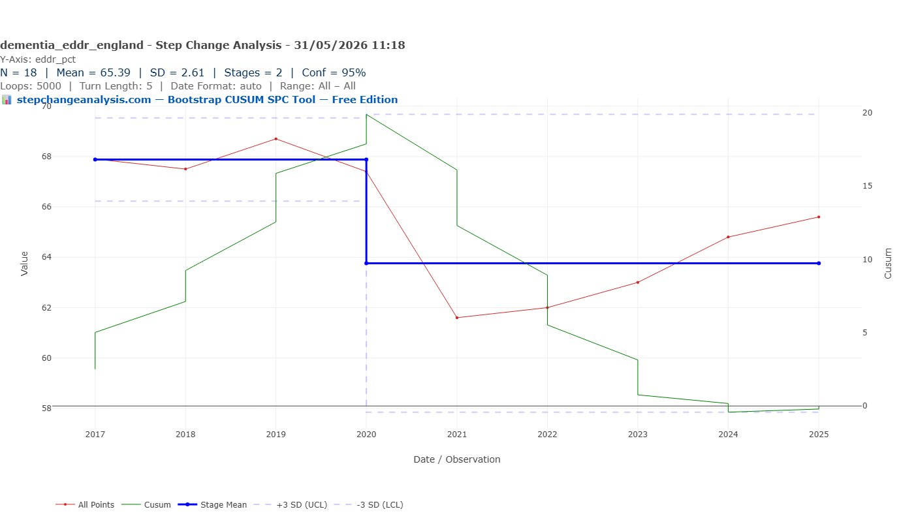

The 66% Target: What the Dementia Diagnosis Data Actually Shows
England’s estimated diagnosis rate fell sharply after March 2020 and then partly recovered. The useful question is what changed in the pathway—not just whether a target was met.
The linked CSV records 65.6% in March 2025: 1.1 percentage points below the 66.7% ambition. A diagnosis-rate target measures recorded coverage, not the quality of diagnosis, support or patient outcomes.
What the rate measures
The estimated dementia diagnosis rate (EDDR) compares recorded diagnoses among people aged 65 and over with the estimated number living with dementia. The denominator is modelled, not a count of everyone who actually has dementia.
Changes in recording, the registered population and prevalence assumptions can affect the result alongside changes in diagnostic activity. The rate is useful, but it cannot tell us by itself how long people wait, whether diagnoses are accurate or what support follows.
This example uses nine annual March observations from the existing downloadable CSV, attributed by the original article to OHID Fingertips. It is not the full monthly NHS series. Earlier historical claims and later monthly results should not be read into these nine points.
A sharp fall, followed by partial recovery
The CSV’s highest rate is 68.7% in 2019. It records 67.4% in March 2020 and 61.6% in March 2021—a fall of 5.8 percentage points. The rate then rises in each annual observation to 65.6% in March 2025.
The timing is consistent with pandemic disruption, but the series alone cannot separate changes in access, referrals, assessment capacity, recording or the denominator. Nor can it attribute the earlier higher rates to a particular policy or incentive.
New to X-mR charts? X plots individual readings; mR plots the absolute difference between consecutive readings. Calculated limits help assess variation. What is an X-mR chart? — a simple explanation.

See the nine source-CSV values
| March observation | Estimated diagnosis rate |
|---|---|
| 2017 | 67.9% |
| 2018 | 67.5% |
| 2019 | 68.7% |
| 2020 | 67.4% |
| 2021 | 61.6% |
| 2022 | 62.0% |
| 2023 | 63.0% |
| 2024 | 64.8% |
| 2025 | 65.6% |
The source CSV also contains confidence bounds for the estimated rates. Those are not the X-mR process limits shown above.
What the CUSUM does—and does not—establish
New to CUSUM charts? CUSUM means cumulative sum: it adds each observation’s departure from a reference value. In these retrospective charts, that reference is the whole-series mean. What does the CUSUM line show?

One fitted stage means this run did not identify a boundary under its settings. It does not prove there was no important change, that the system is returning to normal, or that detection is impossible at every other setting. Nine annual observations provide limited information.
The green line accumulates deviations from the whole-series mean; its return towards zero is a mathematical consequence of centring, not evidence of recovery. A confidence setting is not the probability that a policy worked. Neither chart identifies a cause.
For local improvement, use a consistent, more frequent series where available, check definitions and dependence between observations, and record pathway changes alongside results.
Investigate the pathway, then test the change
Memory-clinic capacity, referral quality, workforce availability and access to assessment are plausible places to investigate. This national rate does not establish which is the binding constraint in a particular service. Talk to patients, carers and staff, and follow the work before choosing a solution.
- Access and flow: referral volumes, waiting time to assessment and completed assessments.
- Quality and fairness: diagnostic review, referral conversion and differences between population groups.
- Support and outcomes: access to post-diagnostic support, patient and carer experience, and crisis care.
- Balancing effects: workload, cost and whether faster throughput compromises assessment or support.
State what the intervention should change, why and over what timescale. Monitor the intended benefit and possible harm. Do not extrapolate a date for reaching the national target from this short recovery segment.
How to take this further
- Right Measures — distinguish a coverage target from useful care and outcomes.
- Right Problem — find the local constraint rather than assume it.
- Right Intervention — test a response matched to the pathway evidence.
For the complete framework, read Why Improvement Programmes Fail.
Open the StepChange Analyzer → Use it to explore a question, not to substitute a chart signal for an explanation.
Sources, downloads and corrections
- OHID Fingertips: dementia profile — the source attributed by the original article.
- NHS primary care dementia publications — check the relevant release and definitions before using a more recent figure.
- Download the existing March 2017–2025 CSV.
- Download the revised one-page summary PDF.
Correction: the earlier narrative and table disagreed with the linked CSV. This version uses its values, including 68.7% in 2019, 61.6% in 2021 and 64.8% in 2024; the March 2020–2021 fall is 5.8 percentage points. Existing chart images are retained unchanged. Their displayed mean is 65.39%, individual-value limits are 61.17–69.61%, and moving-range upper limit is 5.19 points; these are software output, not rate-estimate confidence bounds.
Scope: the CSV has not been independently refreshed from OHID. The original article notes a prevalence-method change around 2017/18, so earlier series should not be spliced in without checking comparability. Unsupported causal claims, recovery forecasts and the speculative causal-loop diagram have been removed. No claim is made here about the current rate or treatment eligibility.